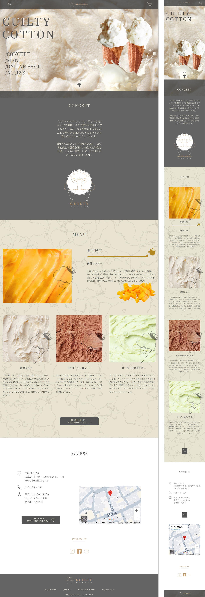

WORKS


- 制作目的（サイトイメージ）
- 学校の授業で、コンセプトとターゲットを設定したうえで架空のアイスクリーム屋のロゴを作成した。
せっかくならその世界観をさらに表現してみたいと考え、WEBサイト制作にも挑戦。
店舗は神戸市にある想定とし、濃厚で新鮮なミルクを使用した高品質なアイスクリームを提供するお店として、ターゲットに合った「高級感ある雰囲気」を表現することを目的とした。
メニュー背景には大理石をイメージしたデザインを用い、上質さを演出しつつ、ファーストビューにある牛のマークが、アニメーションで現れる仕掛けを取り入れることで、遊び心と親しみやすさを加えて集客力のあるサイトを目指した。
また、スマートフォンでの閲覧者が多いことを想定し、スマートフォンでの見やすさを1番に意識した。
- ターゲット
- 神戸市に住む30〜40代の女性。日常の中でちょっとした贅沢を楽しみたいと考え、価格よりも品質を重視している層。
- ペルソナ
- 年齢：35歳
性別：女性
居住地：神戸市内
ライフスタイル：休日に友人や家族とカフェやスイーツを楽しむ。SNSで新しいお店を探す習慣がある。
ニーズ：少し高価格でも、素材にこだわった高品質なスイーツを選びたい。見た目のデザイン性や上質な雰囲気も重視する。
- 制作時間
- デザイン：約1日
コーディング：約3日間
- 使用したソフト
- デザイン：Figma
コーディング：Visual Studio Code（HTML / CSS / JavaScript）
- 担当した箇所
- ・ロゴ制作（授業課題として作成）
・デザインからコーディングまでを一貫して1人で作成。
- 苦労した点、工夫した点、制作に関して気付いた事など…
- 苦労した点:
高級感を演出するために色味や素材感（大理石風の背景など）のバランスを意識したが、重くなりすぎないよう調整する点に苦労した。
工夫した点:
「新鮮」「ミルク」のイメージに直結しやすいように、ロゴに牛を取り入れ、さらにファーストビューにて牛のマークをアニメーションで動かすことで、敷居の高さを感じさせない「遊び心」をプラス。高級感と親しみやすさを両立させたデザインを意識した。
制作に関して気付いたこと:
デザインと動きの両方を工夫することで、店舗の「世界観」を伝えやすくなることを実感した。 親しみやすさを、アニメーションの演出が補える点が学びとなった一方で、やりすぎると高級感が崩れるため必要な個所に意味のあるアニメーションをつけるなど、バランスが大切だと実感した。